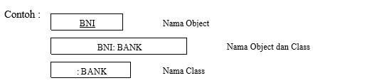

Hasil Saduran pertemuan 7:
Sequence Diagram adalah salah satu dari diagram - diagram yang ada pada UML, sequence diagram ini adalah diagram yang menggambarkan kolaborasi dinamis antara
sejumlah object. Kegunaannya untuk menunjukkan rangkaian pesan yang dikirim antara object juga interaksi antara object. Sesuatu yang terjadi pada titik tertentu
dalam eksekusi sistem.
Dalam UML, object pada sequence diagram digambarkan dengan segi empat yang berisi nama dari object yang digarisbawahi. Pada object terdapat 3 cara
untuk menamainya yaitu : nama object, nama object dan class, dan nama class. Berikut contoh dari ketiga cara tersebut :

Dalam sequence diagram, setiap object hanya memiliki garis yang digambarkan garis putus-putus ke bawah. Pesan antar object digambarkan
dengan anak panah dari object yang mengirimkan pesan ke object yang menerima pesan.
Sequence diagram adalah jenis diagram interaksi karena menggambarkan Bagaimana dan dalam urutan Apa objek bekerja bersama. sequence diagram
digunakan oleh pengembang perangkat lunak dan profesional bisnis untuk memahami persyaratan sistem baru atau untuk mendokumentasikan proses yang ada.